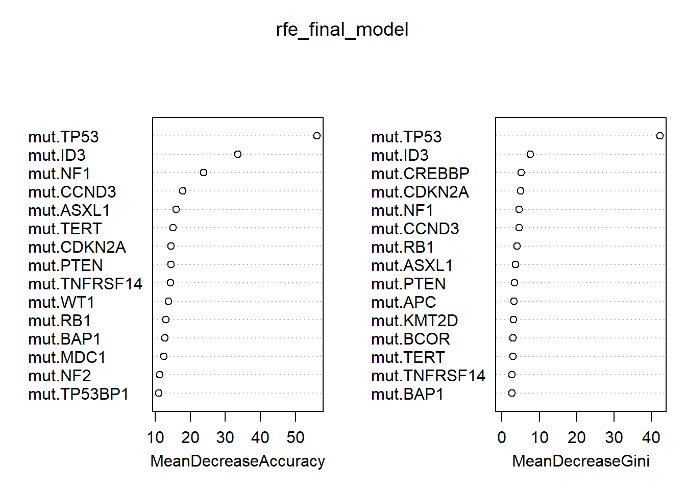

# Load all packages
require(tidyverse)
require(here)
require(caret)
require(randomForest)
# Load the mutation table from the RDS file saved in the last post
data <- readRDS(here("_data/combined_data.rds"))
file_path <- here("_data/cancerGeneList.tsv")
Gene_anno <- read_tsv(file_path, guess_max = Inf)
# pull genes in MSK-IMPACT panel
MSK_genes <- Gene_anno %>% filter(`MSK-IMPACT` == "Yes") %>%
pull(`Hugo Symbol`) %>% unique()
data_rf <- data %>%
dplyr::select(any_of(paste0("mut.", MSK_genes)),
WGD) %>%
filter(! is.na(WGD))
# remove "-" from names to avoid errors running RF
names(data_rf) <- gsub("-", "", names(data_rf))
data_rf <- data_rf %>% mutate(WGD = as.factor(WGD))In this post, we will do something slightly more complicated with caret. Recursive Feature Elimination (RFE) is a feature selection technique that recursively removes less important features and builds models on the remaining subset of features. The goal is to identify the most relevant features that contribute to the predictive performance of the model.
The first section of the code will be the same:
Let’s now run RFE, still with Ramdom Forests. It will take a while too…
set.seed(23)
train_idx <- createDataPartition(data_rf$WGD, p = 0.8, list = FALSE)
train_data <- data_rf[train_idx, ]
test_data <- data_rf[-train_idx, ]
# Set up RFE
rfe_control <-rfeControl(functions = rfFuncs,
method = "repeatedcv",
number = 10,
repeats = 3,
verbose = FALSE)
rfe_result <- rfe(
x = train_data %>% dplyr::select(-WGD),
y = train_data$WGD,
sizes = c(5,10,20,30,40,50,100),
rfeControl = rfe_control )
print(rfe_result)
Recursive feature selection
Outer resampling method: Cross-Validated (10 fold, repeated 3 times)
Resampling performance over subset size:
Variables Accuracy Kappa AccuracySD KappaSD Selected
5 0.6578 0.09567 0.02716 0.09121
10 0.6620 0.23667 0.03135 0.10668
20 0.6825 0.30673 0.04058 0.09377
30 0.6897 0.32485 0.04305 0.09323
40 0.6931 0.32918 0.04620 0.09903
50 0.6967 0.33438 0.04392 0.09383
100 0.6993 0.33601 0.04499 0.09349
475 0.7089 0.35307 0.04247 0.08988 *
The top 5 variables (out of 475):
mut.TP53, mut.ID3, mut.NF1, mut.CCND3, mut.ASXL1rfe_final_model <- rfe_result$fit
varImpPlot(rfe_final_model, n.var=15)
# Predict on test set
rf_pred <- predict(rfe_final_model, newdata = test_data)
confusionMatrix(rf_pred, test_data$WGD)Confusion Matrix and Statistics
Reference
Prediction 0 1
0 47 39
1 62 173
Accuracy : 0.6854
95% CI : (0.6315, 0.7358)
No Information Rate : 0.6604
P-Value [Acc > NIR] : 0.18874
Kappa : 0.2606
Mcnemar's Test P-Value : 0.02859
Sensitivity : 0.4312
Specificity : 0.8160
Pos Pred Value : 0.5465
Neg Pred Value : 0.7362
Prevalence : 0.3396
Detection Rate : 0.1464
Detection Prevalence : 0.2679
Balanced Accuracy : 0.6236
'Positive' Class : 0
Apparently, using all features to build a model is not ideal and likely to be overfitting. But as a toy example, we can see the top feature is mut.TP53, which has been reported to be associated with WGD status.